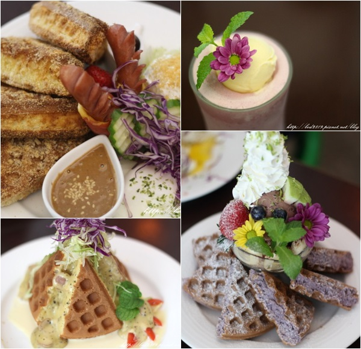
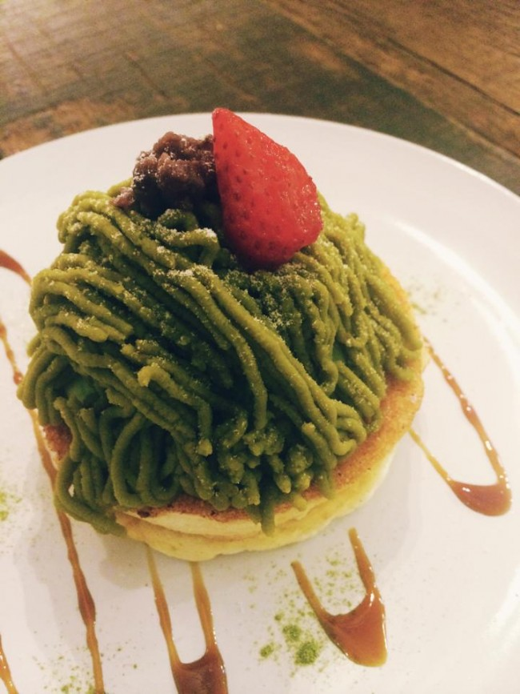
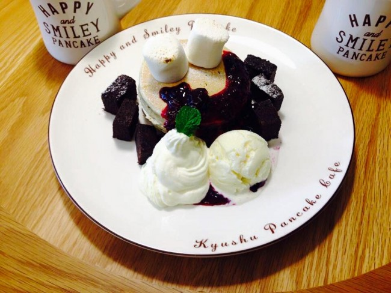
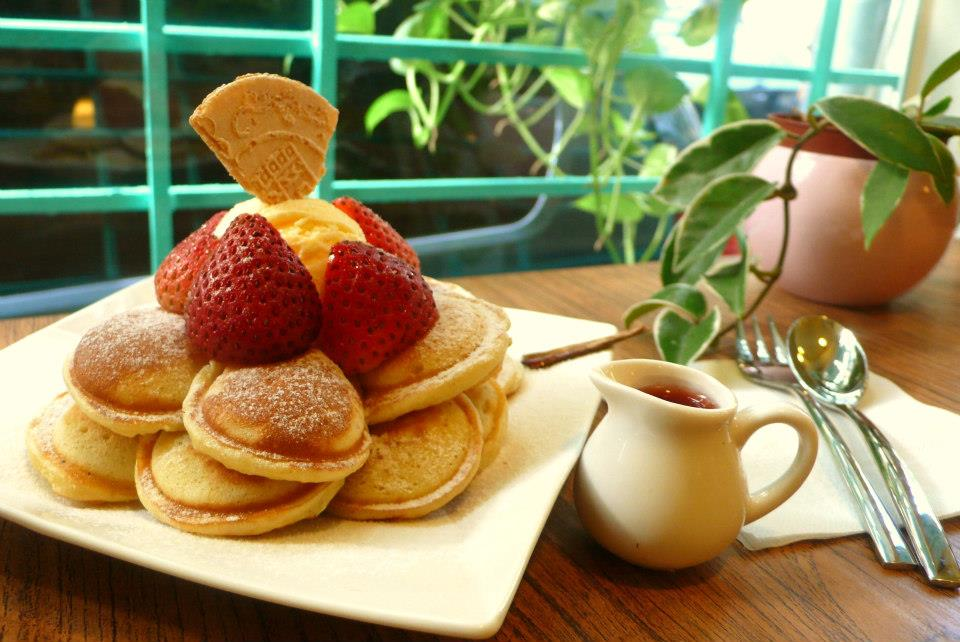

首頁
關於我
好康分享
首頁
關於我
好康分享
一家出自日本師傅之手的美味鬆餅店，店內最人氣的巧克力芭娜娜鬆餅和新推出的抹茶蒙布朗鬆餅都是人氣甜點，裝潢擺設採用木頭打造居家舒適的風格，入口即化的口感甚至還讓這家店上過知名節目”康熙來了”，如果你是十足甜食控的人，不妨來到這裡品嚐看看。
如果你是小鳥胃的女生，那麼這一家疊疊樂的創意鬆餅一定包君滿意，因為造型小巧可愛所以女生們帶男生一起來的話也不怕吃得很狼狽，除此之外僅只松菸店才有的彩虹疊疊樂可是大受女孩子的歡迎，還有許多人為此募名而來呢！
位在人來人往的東區上的黑鳥先生絕對是你逛街逛累了之後的好去處，裡頭不但空間寬敞，店內的美食也曾經被名人介紹到”康熙來了”，得到兩位主持人及來賓很高的評價，來到這裡除了品嚐鬆餅之外就連鹹食也非常推薦大家喔！
在中山地下街R2出口的荷蘭小鬆餅環境清幽，店內充滿許多個性小物讓人看了眼花撩亂，可以說在可愛的外觀下有著特別的靈魂，少見的小鬆餅堆疊成可口的鬆餅塔是店內的招牌，服務生親切的服務也是會讓你再度光臨的原因之一喔！
